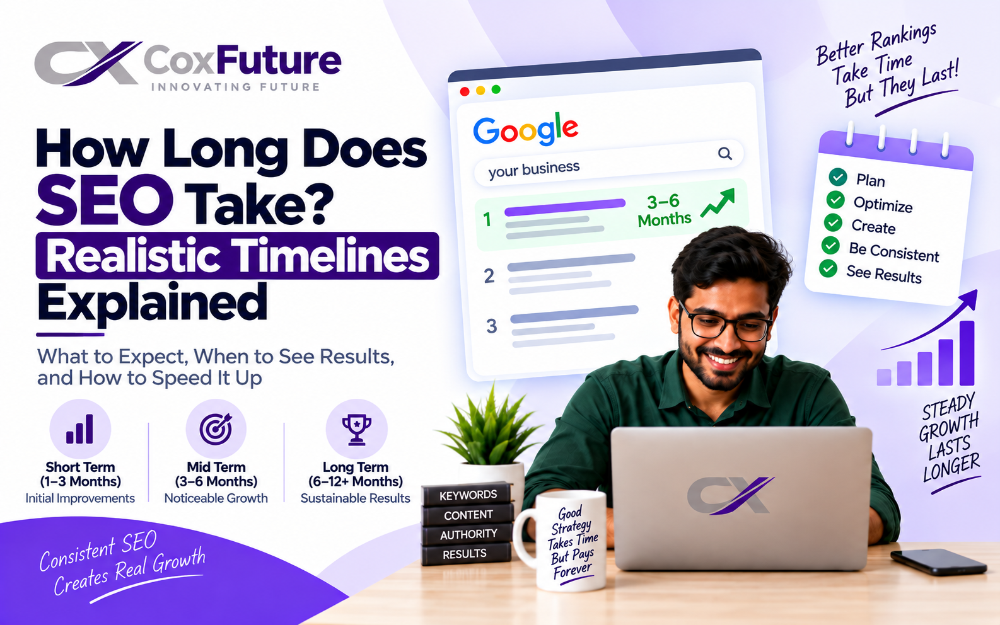

The Short Answer
Most businesses see early signals in 1–3 months, first noticeable traffic and ranking gains in 3–6 months, and real lead and revenue growth in 6–12 months. Highly competitive industries (finance, legal, SaaS, e-commerce) can take 12–18 months; a local business in a small market can move in 2–4 months.
That range frustrates owners, so here is the logic behind it, and how to tell whether yours is on track.
Why SEO Takes Time
- Google must find and trust your pages. New or updated pages need to be crawled, indexed and evaluated. This can take days to weeks per page.
- Authority is earned slowly. Rankings depend heavily on how many credible sites link to you and how well your content satisfies searchers. Both build gradually.
- Competitors are already ahead. You are not ranking in a vacuum; you must beat pages that have years of links, content and engagement history.
- Google tests before it rewards. New rankings often fluctuate for weeks before settling.
- Content and links compound. Every page and link you add strengthens the whole site, so year two outperforms year one.
Unlike paid ads, which stop the moment you stop paying, SEO traffic keeps arriving long after the work is done, which is why it is slower to start but cheaper per lead over time.
A Realistic Month-by-Month SEO Timeline
| Period | What is happening | What you will see |
|---|---|---|
| Month 1 | Audit, keyword research, competitor analysis, technical fixes, tracking setup (Google Search Console, Analytics) | Little to no traffic change. Better site health, clear strategy. |
| Month 2–3 | On-page optimization, first content published, Google Business Profile optimized, first links built | Indexing improves, impressions rise, low-competition keywords begin to rank (often positions 20–50). |
| Month 4–6 | Ongoing content, link building, internal linking, refining based on data | Rankings climb toward page 1–2 for targeted terms. Organic traffic and first enquiries grow noticeably. |
| Month 7–9 | Expanding to more keywords, updating top pages, stronger authority building | Several keywords on page 1. Steady leads. Conversion optimization starts paying off. |
| Month 10–12 | Scaling what works, covering topic clusters, defending rankings | Clear ROI. Organic often becomes a top lead channel. Growth accelerates. |
| Year 2+ | Compounding: new content ranks faster on an established domain | Lower cost per lead than at any earlier point; durable, hard-to-copy traffic. |
These are typical ranges, not promises. Treat them as benchmarks for the middle of the road: a new website, a moderately competitive niche, and consistent monthly effort.
What Makes SEO Faster or Slower
1. Competition
Ranking for "plumber in Noida" is far easier than "best CRM software". The higher the commercial value of a keyword, the stronger the pages you must outrank, and the longer it takes.
2. Website age and authority
A domain with years of history and quality backlinks moves faster than a brand-new one. New sites should expect 6–12 months before meaningful returns.
3. Current site health
Slow loading, poor mobile experience, broken pages, duplicate content or blocked indexing can hold everything back. Fixing these first often produces the quickest early wins.
4. Content quality and consistency
Pages that fully answer a searcher's question, with original insight rather than recycled generic text, rank and hold better. Publishing consistently matters more than occasional bursts.
5. Backlinks
Earning links from relevant, trusted sites is usually the slowest and most decisive part of SEO. Quality beats quantity; a handful of strong links outperforms hundreds of spammy ones, which can actually cause penalties.
6. Budget and resources
More content, technical work and outreach per month means faster progress. Underfunded SEO is the most common reason results drag past a year.
7. Search intent and keyword choice
Targeting terms where people are ready to buy, and matching the page type Google already shows for them (guide, product page, comparison), prevents months of wasted effort.
8. Algorithm updates
Google's core updates can shift rankings for weeks. Sites that follow quality fundamentals are more resilient, but occasional volatility is normal.
How Long by Business Type
| Business | Typical time to meaningful results | Why |
|---|---|---|
| Local service business (clinic, salon, contractor) | 2–6 months | Map-pack ranking via Google Business Profile, reviews and local citations is relatively fast |
| New small business website | 6–12 months | No authority yet; must build content and links from zero |
| E-commerce store | 6–12 months | Many pages to optimize; strong competition from marketplaces |
| B2B / SaaS | 9–18 months | Longer sales cycles, competitive keywords, content depth required |
| Established site with history | 3–6 months | Existing authority makes optimization gains show faster |
| Highly competitive (finance, legal, health) | 12–24 months | Strong incumbents and strict quality standards |
If you serve customers in a specific city, our Google Business Profile optimization is often the fastest first step, usually working in parallel with broader SEO services.
Early Signs Your SEO Is Working (Before Leads Arrive)
Revenue is a lagging indicator. In the first months, watch these leading indicators in Google Search Console and Analytics:
- Impressions rising: your pages are appearing in search more often, even without clicks.
- More pages indexed: Google is discovering and storing your content.
- Keywords moving up: positions improving from 50+ toward 20, then 10.
- Growing number of ranking keywords: especially long-tail phrases.
- Click-through rate improving after title and description updates.
- Technical health scores improving: faster load times, fewer errors, better Core Web Vitals.
- Branded searches growing: more people searching for your business by name.
Later, track organic sessions, enquiries or form submissions from organic traffic, calls, and revenue attributed to organic. A healthy campaign shows the leading signals by month 3 and lagging ones by month 6.
Why SEO Sometimes Stalls
- Wrong keywords: too competitive, too broad, or not tied to buying intent.
- Thin or generic content: pages that say what ten other sites say.
- Technical blockers: noindex tags, slow mobile pages, broken structure, duplicate content.
- No link building: content alone rarely beats established competitors.
- Inconsistency: starting, pausing and restarting resets momentum.
- Poor conversion: traffic arrives but the site does not turn visitors into enquiries, so SEO seems "not working" when the website is the problem.
- Shortcuts: bought links, auto-generated content and keyword stuffing can trigger penalties that take months to reverse.
If you see no leading signals at all after 4–6 months, ask for a transparent audit rather than waiting longer.
How to Speed Up SEO Results
- Fix technical issues first. Speed, mobile experience, indexing and site structure are the quickest wins.
- Start with achievable keywords. Win specific, lower-competition terms first; they build authority for harder ones.
- Optimize existing pages before creating new ones. Updating pages that already rank positions 8–20 often brings fast gains.
- Create genuinely useful content. Answer the full question, include examples, pricing, comparisons and FAQs.
- Build real authority. Earn links through useful resources, partnerships, directories relevant to your industry, and PR.
- Optimize your Google Business Profile if you serve local customers: complete profile, photos, categories, regular reviews and posts.
- Improve conversion. Clear calls to action, fast contact options and trust signals make every visitor count.
- Stay consistent. Monthly publishing, tracking and refinement beat sporadic effort.
- Combine SEO with paid ads in the early months. Ads bring leads now while SEO builds toward lower long-term cost.
What to Expect from an SEO Agency (and What to Avoid)
Good signs: a clear audit and written plan, monthly reports showing leading indicators, honest timelines, content and link strategies you can understand, and access to your own Search Console and Analytics accounts.
Red flags: guaranteed page-one rankings or "results in 30 days", secrecy about methods, unnatural link packages, no access to your data, or reports focused on vanity metrics only. Because nobody except Google controls rankings, honest agencies promise effort and process, not positions.
Plan for a minimum of six months of commitment, and judge progress against the timeline above, not against a single month's numbers.
So, is SEO worth the wait?
For most businesses, yes. Paid ads cost more per lead as competition grows, and stop when you stop paying. SEO costs more attention at the start but builds an asset: traffic and enquiries that keep arriving month after month. Start early, stay consistent, measure the right signals, and the timeline works in your favor. Ready to see where your site stands? Talk to our team for an honest assessment, or read our website cost guide if your site needs rebuilding first.